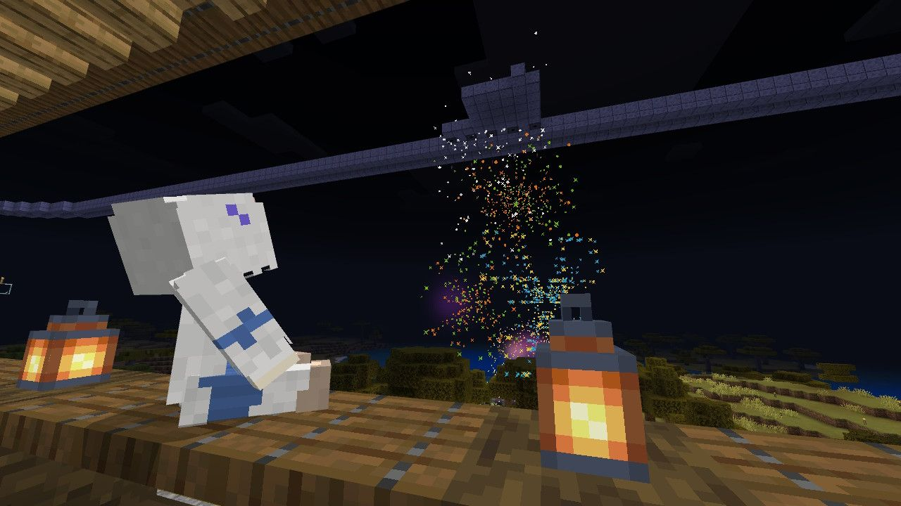

MYSHCRAFT OFFICIAL WEBSITE
MyshCraft
今日もチル。
MyshCraftは、建築・冒険・交流を自由に楽しみながら、
楽しく遊ぶMinecraftサーバーです。
サーバー公開中— Java / Bedrockから参加できます
EDITIONJava / Bedrockクロスプレイ対応
COMMUNITYみんなで遊ぶ自分のペースで楽しむ
SCROLL TO EXPLORE
MYSHCRAFT / OFFICIAL
01 / ABOUT MYSHCRAFT
MyshCraftとは？
HOMEではMyshCraftそのものの紹介に絞り、細かな情報はそれぞれのページへ分けています。
A WORLD FOR EVERYONE
遊び方は、
ひとつじゃない。
自分の好きなことを、好きなペースで。
MyshCraftでは、建築・冒険・交流など、それぞれの楽しみ方を尊重します。プレイヤー同士で思い出をつくり、少しずつ世界を広げていく。そんなコミュニティを目指しています。
01自由な遊び方建築・冒険・交流を自分のペースで。
02みんなで育てる世界プレイヤーと運営で環境をつくる。
03クロスプレイJava / Bedrockから参加できるクロスプレイ環境。

YOUR WORLD / YOUR STORYここから、
ここから、
MyshCraft Lifeがはじまる。
02 / EXPLORE
MyshCraftを
もっと知る
参加方法、運営募集、運営チーム、寄付、FAQなどは専用ページに整理しています。
お知らせをチェック
更新情報は矢印をタップすると閲覧できます。